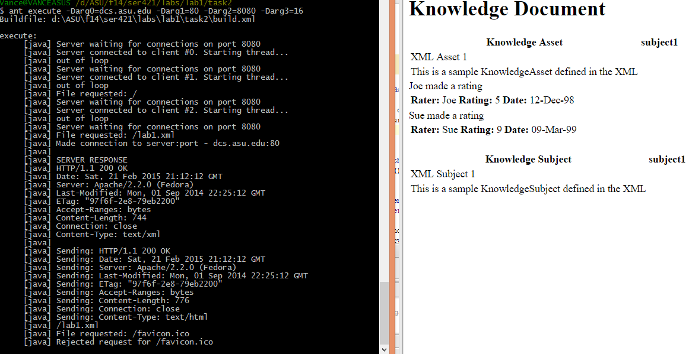
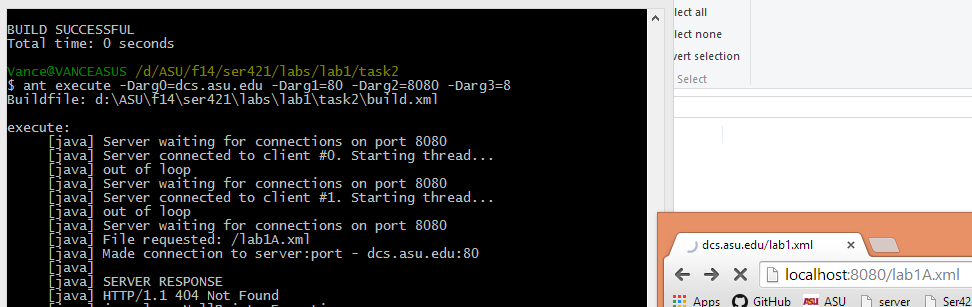
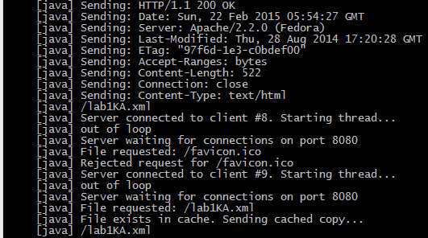

Multithreaded Web Caching Proxy Server
The specifications of this system are as follows
- Accept incoming requests for an XML file, and return the rendered HTML version from a cache or by forward the request to a target server
- Takes the following command-line arguments:
- Target server URL
- Port of the remote server serving XML that is not cached here
- Port on which this server will listen to requests
- Cache size in total number of files
Incoming requests to the server will be over HTTP and be a specific URL. For each incoming request:
- Check to see if an HTML (already converted from the source XML) version of the file is in your cache. If so, return that file’s contents.
- If not, forward the request to the target server
- When you get the response back (and it is valid), place the rendered HTML file in cache and then write the HTML contents back to the client.
- Each incoming request serviced in an individual thread
This implementation utilizes a raw socket connection to begin remote server transaction and all pertinent error codes are available.

Successful request via browser

Unsuccessful request via browser

Cached request